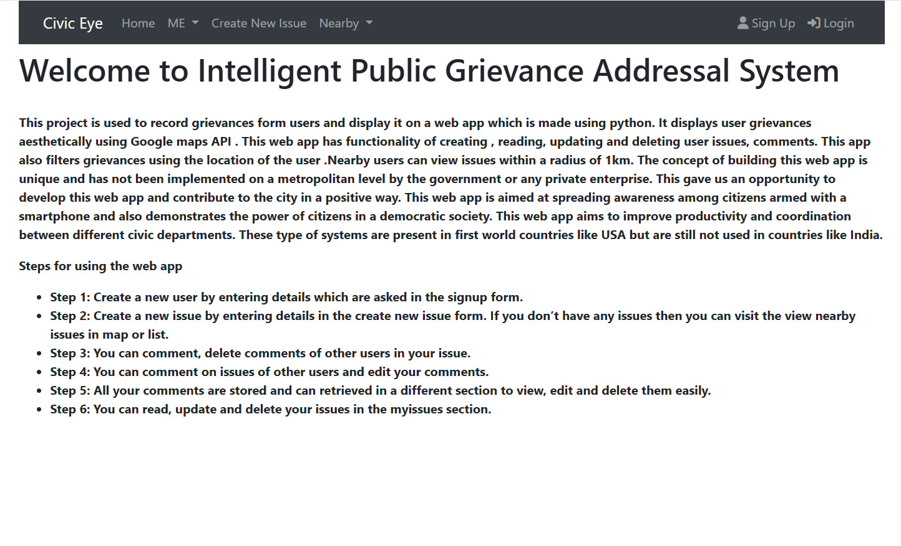
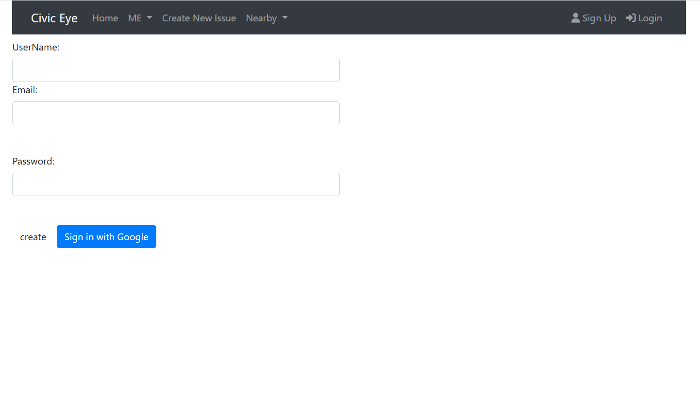
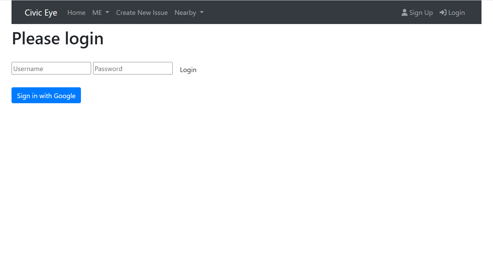
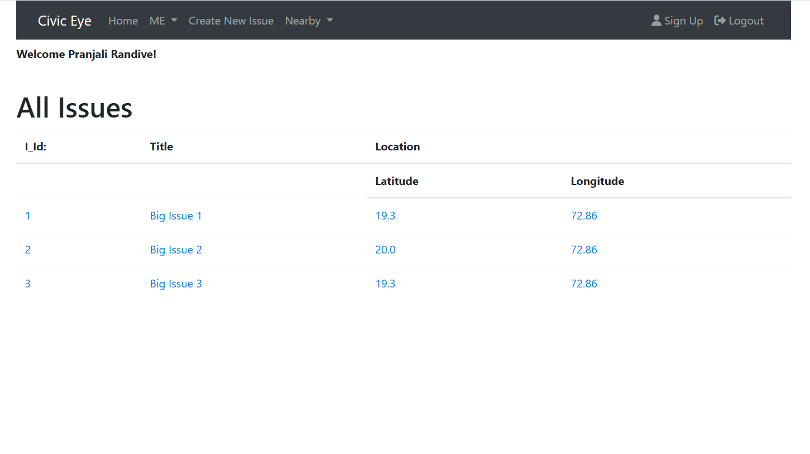
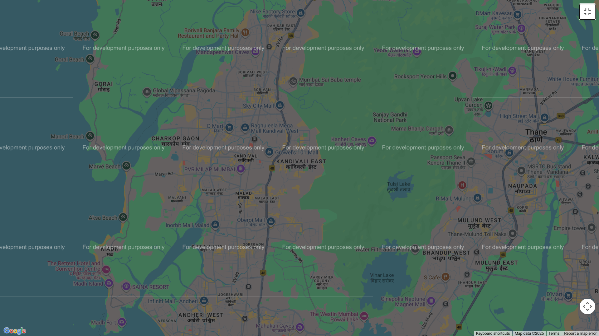
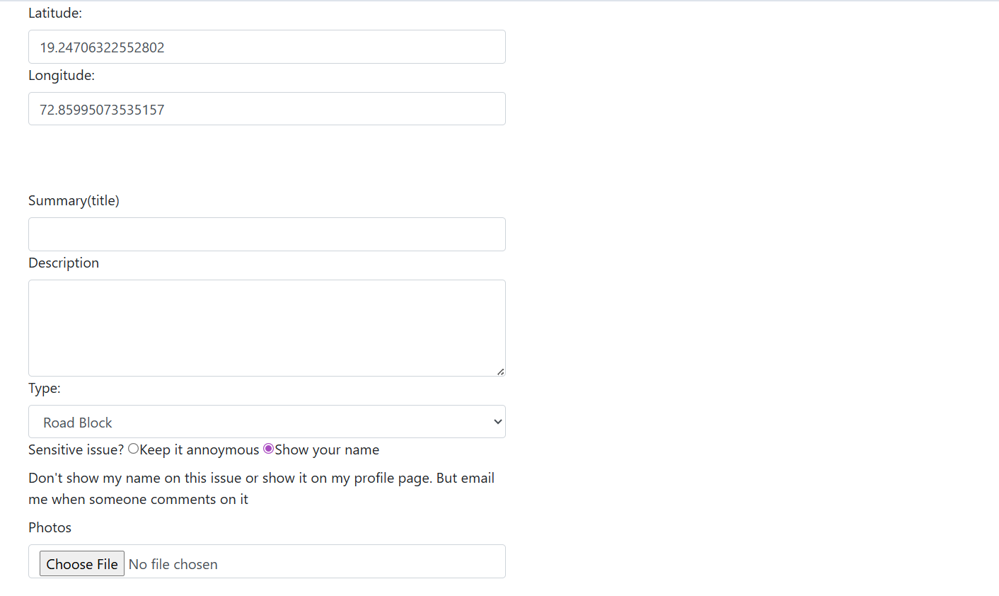
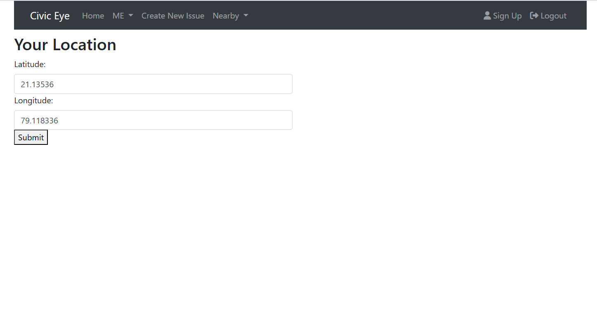
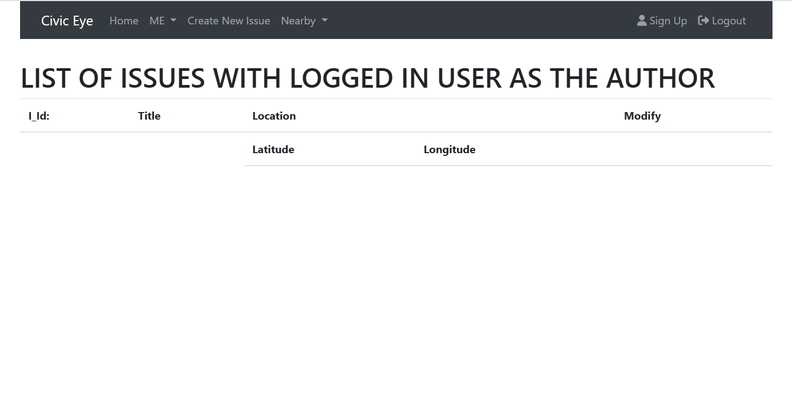
Tech Stack: Python, Flask, Jinja, Wzerg, HTML, CSS, JQuery, Bootstrap, MySQL, SQLAlchemy, Google Maps API, JWT Authentication
Project Description: Developed a secure, Flask-based grievance-tracking platform with JWT authentication, MySQL–SQLAlchemy integration, photo and geolocation support, reducing duplicate reports by ~40% and improving routing efficiency by ~30%.
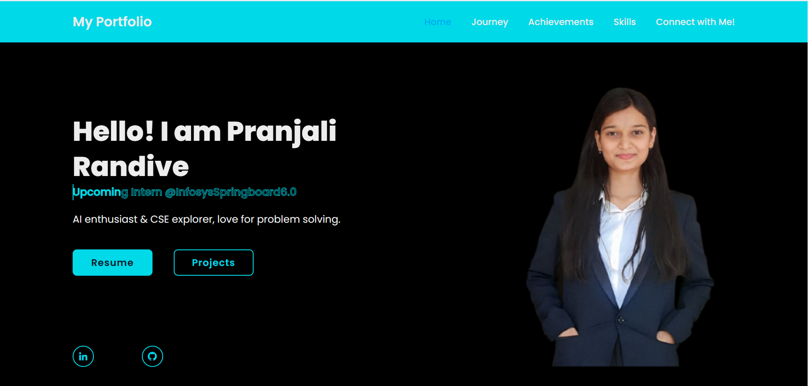
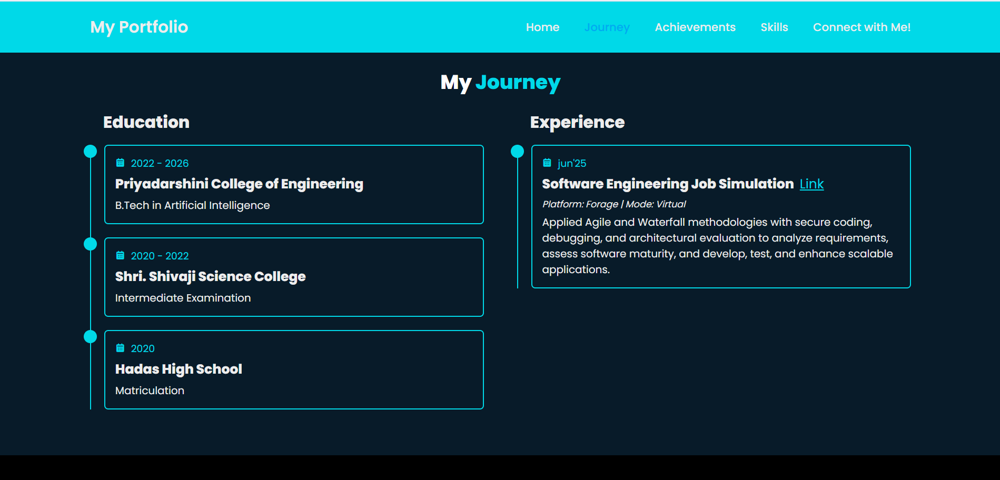
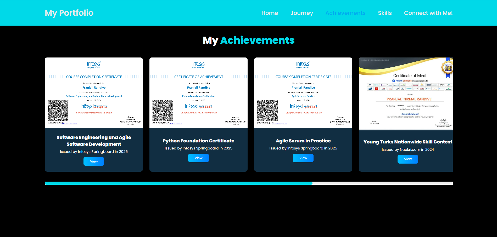
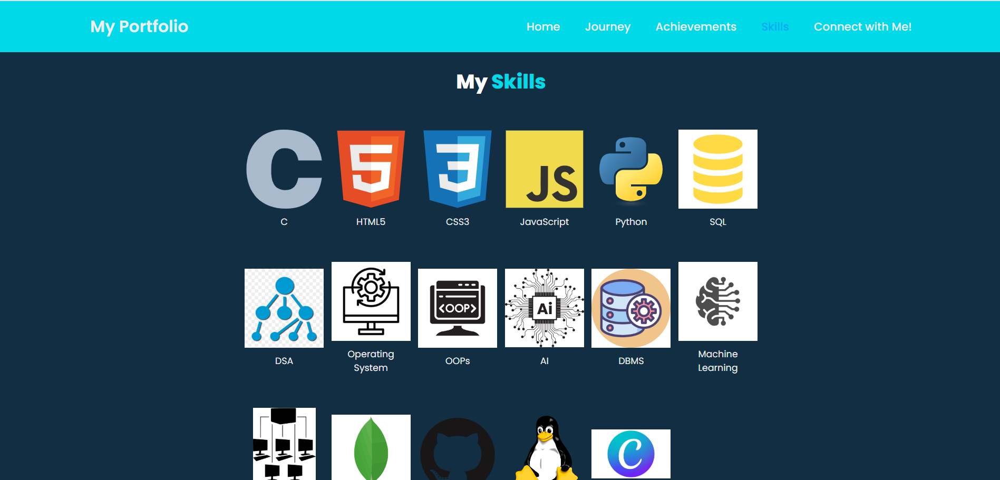
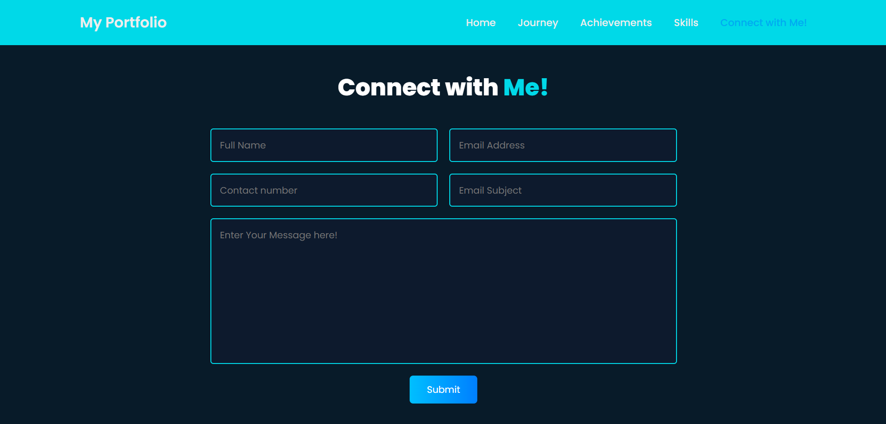
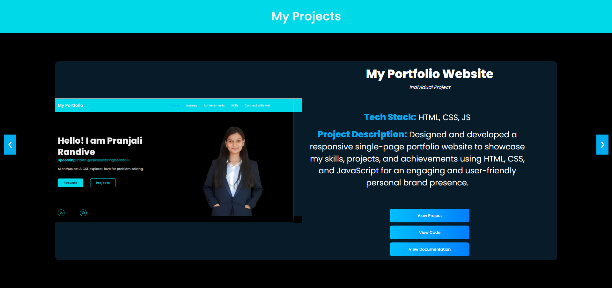
Tech Stack: HTML, CSS, JS
Project Description: Designed and developed a responsive single-page portfolio website to showcase my skills, projects, and achievements using HTML, CSS, and JavaScript for an engaging and user-friendly personal brand presence.